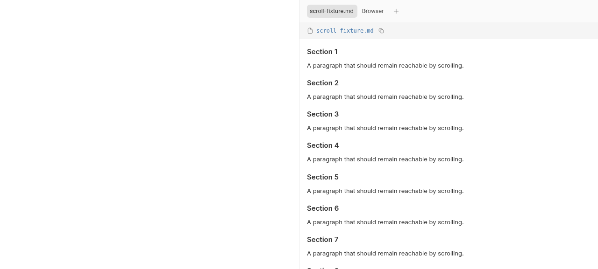
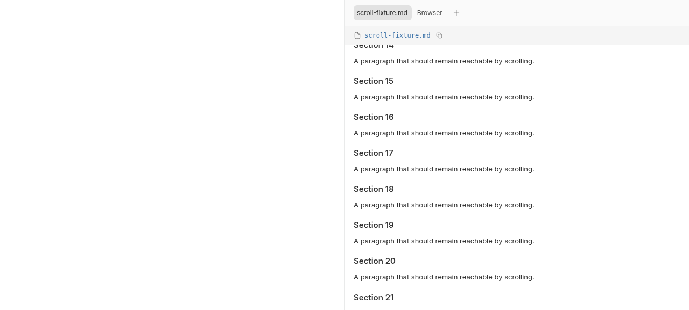

#5336 · Native preview delegation omits a scroll host
Verdict: REPRODUCED · Root-cause confidence: high · reproduction label: confirmed-repro
1. TL;DR
A plugin that delegates its file rendering to the built-in preview can display the beginning of a long Markdown document but cannot reach the rest with the mouse wheel. The built-in Markdown preview grows to fit its contents and expects its parent to scroll. The plugin file-opener route instead provides a bounded, overflow-hidden host and opts out of the panel's ordinary scroll wrapper. Both the initial checkout and a second clean checkout reproduced this mismatch in actual Chrome layout. A locally authored scroll-host repair also demonstrated scrolling and offset restoration; it is not being pushed because an existing open pull request already fixes this issue.
2. Claims vs findings
| Claim | Finding | Evidence |
|---|---|---|
| Delegated Markdown cannot scroll. | Verified | Real wheel input of 900px leaves all ancestors at scrollTop 0 in two checkouts. |
| The full-height plugin host clips overflowing Markdown. | Verified | Host clientHeight 529, scrollHeight 6093; no designated file-preview scroll container. |
| Per-tab reading positions should be retained. | Verified after local repair | Real wheel input reaches 900; switching to Browser and back restores 900. The regression matrix also covers separate documents, asynchronous loading, hyperlinks, and close/reopen. |
| The complete CLI/file-reading flow is affected. | Not exercised end to end | The reproduction supplies synthetic ready preview data to the actual panel and plugin components; it does not start a daemon, read a user's file, or install a third-party plugin. |
3. Environment
- Trusted get-bb/bb origin/main at
e9ad6b0e3473628f96fa98378cf8528aac8984d2, fetched directly from get-bb/bb. - Linux, Node 22.19.0, pnpm 9.15.0, Chrome for Testing 155.0.8059.39; viewport 1280×577.
- First source checkout and a new detached temporary worktree at the same commit. Frozen installs in both; normal Turbo build succeeds with 65 tasks.
- Two isolated Vite component pages on ports 41536 and 41537. Each page has new in-memory React/query state. No persistent BB data directory, provider process, credentials, production instance, or network-facing BB plugin is used.
4. Minimal reproduction
The attached fixture is authored from trusted source evidence, not copied from issue instructions. It mounts the real ThreadSecondaryPanel, PluginPanelTabContent, and FilePreview, registers a delegating opener, and supplies 90 synthetic Markdown sections.
- Check out the recorded commit. Install with
pnpm install --frozen-lockfile --prefer-offlineand build withpnpm exec turbo run build. - Copy repro-5336.html to
apps/app/repro-5336.htmland repro-5336.tsx toapps/app/src/repro-5336.tsx. - For this deliberate component investigation, run
pnpm exec vite --config vite.config.ts --host 127.0.0.1 --port 41536fromapps/app. - Open
http://127.0.0.1:41536/repro-5336.htmlat 1280×577 and wheel down over the document. Expected: later sections become visible. Actual: Section 1 stays at the top. - For the automated regression, replace
apps/app/src/components/secondary-panel/ThreadSecondaryPanel.markdown-scroll.test.tsxwith the attached regression matrix, then run:
pnpm exec turbo run test --filter=@bb/app -- src/components/secondary-panel/ThreadSecondaryPanel.markdown-scroll.test.tsx
Expected: all ten cases pass and delegated previews expose the same reading-position behavior as native tabs. Actual on unchanged production code:
Tests 5 failed | 5 passed (10) Error: Missing file scroll container
The five native cases pass; the five delegation cases fail for the missing container, not an import or harness error.
First wheel run: { marker: false, headingTop: 100, scrolled: [] }
Second wheel run: { marker: false, headingTop: 100, scrolled: [], hostHeight: 529, hostScrollHeight: 6093 }


Complete regression test
// @vitest-environment jsdom
import { useState } from "react";
import { cleanup, fireEvent, render, screen } from "@testing-library/react";
import { afterEach, describe, expect, it, vi } from "vitest";
import { PanelGroup } from "react-resizable-panels";
import { TooltipProvider } from "@bb/shared-ui/tooltip";
import {
createBrowserFixedPanelTab,
createWorkspaceFilePreviewFixedPanelTab,
} from "@/lib/fixed-panel-tabs-state";
import { createQueryClientTestHarness } from "@/test/queryClientTestHarness";
import {
ThreadSecondaryPanel,
type SecondaryPanelRenderableTab,
} from "./ThreadSecondaryPanel";
import { WorkspaceFilePreviewTabContent } from "./ThreadSecondaryPanelTabContent";
import { PluginPanelTabContent } from "@/components/plugin/PluginPanelActions";
import { buildFileOpenerPanelTab } from "@/components/plugin/file-opener-tabs";
import {
resetPluginSlotStoreForTest,
setPluginSlotRegistrations,
} from "@/lib/plugin-slots";
import { makePluginRegistrationSet } from "@/test/fixtures/plugins";
import type { PluginFileOpenerProps } from "@get-bb/plugin-sdk";
const loading = vi.hoisted(() => ({ current: false }));
vi.mock("@/hooks/queries/environment-queries", () => ({
useEnvironment: () => ({ data: { path: "/workspace" } }),
useEnvironmentDiffFiles: () => ({ data: undefined, isLoading: false }),
useEnvironmentWorkStatus: () => ({ data: undefined }),
useEnvironmentFilePreview: (_environmentId: string, path: string) => ({
data: loading.current
? undefined
: {
kind: "text",
content:
path === "short.md"
? "# Short"
: "# Reading\n\n[Visit](https://example.invalid/)\n\n".repeat(60),
mimeType: "text/markdown",
name: path,
path,
url: `/content/${path}`,
},
isLoading: loading.current,
isFetching: false,
error: null,
refetch: () => {},
}),
}));
const noop = () => {};
function Harness({ delegated }: { delegated: boolean }) {
const documents = ["reading.md", "short.md"].map((path) =>
createWorkspaceFilePreviewFixedPanelTab({
environmentId: "env_scroll",
projectId: "proj_scroll",
tab: {
path,
lineRange: null,
source: { kind: "working-tree" },
statusLabel: null,
},
}),
);
const panelDocuments = documents.map((document) =>
delegated
? buildFileOpenerPanelTab(
{ id: "delegate", pluginId: "scroll-test" },
{
path: document.path,
source: {
kind: "workspace",
environmentId: document.environmentId,
projectId: document.projectId,
threadId: "thr_scroll",
},
},
{
kind: "workspace-file-preview",
environmentId: document.environmentId,
projectId: document.projectId,
tab: {
path: document.path,
lineRange: null,
source: document.source,
statusLabel: null,
},
threadId: "thr_scroll",
},
)
: document,
);
const [browserTab] = useState(() =>
createBrowserFixedPanelTab({ environmentId: null, url: "about:blank" }),
);
const [activeId, setActiveId] = useState(panelDocuments[0].id);
const [closed, setClosed] = useState(false);
const tabs: SecondaryPanelRenderableTab[] = documents
.filter((document) => !closed || document.path !== "reading.md")
.map((document) => {
const tab = panelDocuments[documents.indexOf(document)];
const original = (
<WorkspaceFilePreviewTabContent
activePath={document.path}
environmentId={document.environmentId}
isPanelOpen
lineRange={null}
source={document.source}
statusLabel={null}
markdownLinkRouting={{
onOpenLink: () => {
setActiveId(browserTab.id);
return true;
},
}}
/>
);
return {
tab,
label: document.path,
contentFillsRegion: delegated,
leadingVisual: null,
statusLabel: null,
onClose: () => {
setClosed(true);
setActiveId(browserTab.id);
},
onSelect: () => setActiveId(tab.id),
renderContent: () =>
tab.kind === "plugin-panel" ? (
<PluginPanelTabContent
tab={tab}
context={{ kind: "thread", threadId: "thr_scroll" }}
fileOpenerOriginal={original}
/>
) : (
original
),
};
});
tabs.push({
tab: browserTab,
label: "Browser",
leadingVisual: null,
statusLabel: null,
onClose: noop,
onSelect: () => setActiveId(browserTab.id),
renderContent: () => null,
});
return (
<>
<button
onClick={() => {
setClosed(true);
setActiveId(browserTab.id);
}}
>
Close document
</button>
<button
onClick={() => {
setClosed(false);
setActiveId(panelDocuments[0].id);
}}
>
Reopen document
</button>
<PanelGroup direction="horizontal">
<ThreadSecondaryPanel
activeTab={tabs.find((tab) => tab.tab.id === activeId)?.tab ?? null}
canUseGitUi={false}
fixedTabs={[]}
tabs={tabs}
isOpen
metadataContent={null}
onClose={noop}
onCollapse={noop}
onTabReorder={noop}
onOpenNewTab={noop}
onPanelFocus={noop}
onToggleConversationCollapse={noop}
isConversationCollapsed={false}
renderAsDrawer={false}
renderBrowserDeck={(active) =>
active ? <div>Browser content</div> : null
}
/>
</PanelGroup>
</>
);
}
function renderHarness(delegated: boolean) {
if (delegated) {
setPluginSlotRegistrations(
"scroll-test",
makePluginRegistrationSet({
fileOpeners: [
{
id: "delegate",
title: "Delegate preview",
extensions: ["md"],
component: ({ Original }: PluginFileOpenerProps) => <Original />,
},
],
}),
);
}
const { wrapper: Wrapper } = createQueryClientTestHarness();
const content = () => (
<Wrapper>
<TooltipProvider>
<Harness delegated={delegated} />
</TooltipProvider>
</Wrapper>
);
return { ...render(content()), content };
}
function scrollContainer() {
const container = document.querySelector<HTMLDivElement>(
"[data-file-preview-scroll-container]",
);
if (!container) throw new Error("Missing file scroll container");
return container;
}
function scrollTo(position: number) {
scrollContainer().scrollTop = position;
fireEvent.scroll(scrollContainer());
}
function selectTab(name: string) {
fireEvent.click(screen.getByRole("button", { name }));
}
afterEach(() => {
cleanup();
resetPluginSlotStoreForTest();
loading.current = false;
window.localStorage.clear();
});
describe.each([false, true])(
"Markdown reading position with delegation=%s",
(delegated) => {
it.each(["tab", "hyperlink"])(
"retains position after leaving through a %s",
(navigation) => {
renderHarness(delegated);
scrollTo(780);
if (navigation === "tab") selectTab("Browser");
else fireEvent.click(screen.getAllByRole("link", { name: "Visit" })[0]);
expect(
document.querySelector("[data-file-preview-scroll-container]"),
).toBeNull();
selectTab("reading.md");
expect(scrollContainer().scrollTop).toBe(780);
},
);
it("retains separate document positions when the outgoing layout clamps", () => {
renderHarness(delegated);
scrollTo(780);
selectTab("short.md");
scrollTo(0);
selectTab("reading.md");
expect(scrollContainer().scrollTop).toBe(780);
scrollTo(920);
selectTab("short.md");
expect(scrollContainer().scrollTop).toBe(0);
selectTab("reading.md");
expect(scrollContainer().scrollTop).toBe(920);
});
it("waits for ready Markdown content before restoring", () => {
const harness = renderHarness(delegated);
scrollTo(780);
selectTab("Browser");
loading.current = true;
selectTab("reading.md");
scrollTo(0);
loading.current = false;
harness.rerender(harness.content());
expect(scrollContainer().scrollTop).toBe(780);
});
it("forgets a closed document even when reopening uses the same tab id", () => {
renderHarness(delegated);
scrollTo(780);
fireEvent.click(screen.getByRole("button", { name: "Close document" }));
fireEvent.click(screen.getByRole("button", { name: "Reopen document" }));
expect(scrollContainer().scrollTop).toBe(0);
});
},
);
5. Root cause
FilePreview's Markdown branch chooses content-height layout (flex min-h-full flex-col) rather than a bounded full-height scrolling body. It is intentionally dependent on a parent scrolling region.
FileOpenerTabContent binds the original node directly and mounts the replacement in flex h-full min-h-0 flex-1 flex-col overflow-hidden. Delegating to Original therefore mounts the content-height Markdown preview in an overflow-hidden region.
ThreadSecondaryPanel removes its ordinary scroll host and marker for full-height surfaces. Markdown reading-position tracking needs that marker to find its scroll owner. In the delegated route, there is neither a wheel-scrollable ancestor nor an owner for offset tracking. Chrome measurements show 6093px of content inside a 529px clipped host, directly explaining the failure.
Repository history distinguishes this from an offset-only defect: the prior bb5a62f3b change (PR #5185) added reading-position retention without supplying a scroll owner for the plugin path.
6. Proposed fix and local validation
Supply a bounded native preview scroll owner while preserving the full-height custom opener contract. The local experiment wraps the bound original node in h-full min-h-0 overflow-auto and adds the existing data-file-preview-scroll-container marker. An alternative is for Markdown itself to own a bounded scrolling layout; the linked PR takes that approach.
after-wheel { scrollTop: 900, height: 529, scrollHeight: 6093, overflowY: 'auto' }
restored 900
Test Files 3 passed (3)
Tests 84 passed (84)

Checks: regression matrix, existing FilePreview tests, existing plugin-slot-mount tests (84 total); app lint and typecheck pass. Lint reports 248 warnings and zero errors. The unpublished experiment is 204 changed text lines across two files; no dependency, lockfile, stored data, public API, protocol, or schema changes.
7. Existing PR review
PR #5337 is open and links to #5336. Static metadata and diff inspection show a bounded full-height Markdown wrapper with overflow-y-auto and the existing scroll marker. This directly addresses the measured absence of a scroll owner and retains the existing offset mechanism. Its added test models a full-height host, but does not register and render a real delegating opener like the attached matrix. No linked branch, test, or executable was checked out or run; claims in its body were not treated as verified evidence. Static assessment: consistent with the demonstrated root cause; PR behavior is not independently executed here.
No duplicate PR is safe while #5337 remains open. The initial search index returned no PR; the authoritative issue cross-reference timeline revealed it before any fix commit or push.
8. Verification
The same agent repeated the reproduction, not an independent verifier. A new detached worktree at e9ad6b0e3473628f96fa98378cf8528aac8984d2 received only the locally authored fixture and regression test. A new frozen install succeeded; the same Turbo regression command again returned exit 1 with five delegated cases failing Missing file scroll container and five native cases passing. A separate Chrome page on port 41537 repeated actual wheel input and showed no scrolling, a 529px viewport, and 6093px overflow. This supports the final REPRODUCED verdict without report corrections.
9. Related work and limits
The trusted repository history's PR #5185 concerns reading-position tracking; it does not provide the missing scroll host. No claim is made about iOS, Safari, arbitrary third-party layouts, or the complete CLI workflow. This report tests the real rendering boundary with controlled synthetic input.
10. Appendix
Artifacts: first baseline log, second baseline log, local fixed test log, unpublished local experiment, and browser measurements.
Issue text, comments, and linked PR metadata/diff were treated as untrusted claims only. No issue command, script, attachment, external link, or linked branch was executed. The only executed code was trusted origin/main plus the locally authored reproduction and experiment. Temporary browser setup is outside the repository and adds no project dependency.